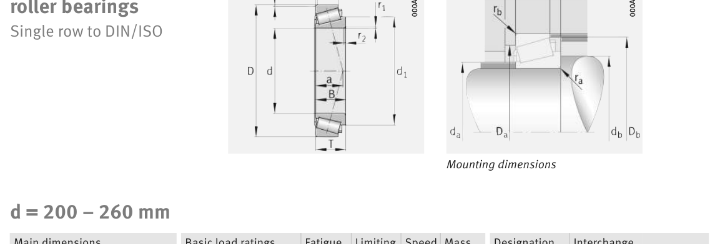

Original catalogue drawing - FAG Schaeffler HR 1, page 610

Scanned from the manufacturer catalogue page listing this part number. All part numbers printed on that table share the same drawing.
Scale cross-section
Blue = inner / outer ring, yellow = rolling element. Drawn to scale from this part's own
dimensions for selection reference only - not a manufacturing or assembly drawing.
Dimension table (mm / inch)
Symbol
Dimension
mm
inch
d
Bore diameter
220
8.6614
D
Outside diameter
400
15.748
B
Inner-ring / bearing width
108
4.252
T
Overall assembly width
114
4.4882
C
Cup / outer-ring width
90
3.5433
r
Chamfer (min)
920
36.2205
Notes
Weights are given in kg. Load ratings are shown in both the original catalogue units and the converted value (1 N = 0.2248 lbf). Data is provided for selection reference only - confirm against the latest official catalogue before ordering.
Main dimensions
Bore d (mm)
220
Outside dia. D (mm)
400
Width B (mm)
108
Overall width T (mm)
114
Cup width C (mm)
90
Inner-ring OD d1 (mm)
305
Load ratings & speeds
Basic dynamic load rating Cr (lbs)
409152
Basic static load rating Cor (lbs)
573263
Basic dynamic load rating Cr (N)
1.82e+06
Basic static load rating C0r (N)
2.55e+06
Basic dynamic axial rating Ca (N)
12
Fatigue limit load Cur (N)
305000
Factor e
0.43
Factor Y
1.38
Factor Y0
0.76
Limiting speed nG (rpm)
1,800
Effective load centre a (mm)
95
Weight
Weight (kg)
59.2
Mounting dimensions (fillets / shoulders)
Housing fillet r max (mm)
920
Chamfer r2 min (mm)
5
Shaft shoulder da (mm)
258
Shaft shoulder db (mm)
237
Housing shoulder Da (mm)
336
Housing shoulder Db (mm)
380
Housing fillet ra max (mm)
5
Fillet rb max (mm)
4
Bearing life (ISO 281 basic rating life)
C / P
Equivalent load P (N)
L10 (106 rev)
L10h at 600 rpm
4
455,000
102
2,822
6
303,333
392
10,903
8
227,500
1,024
28,444
10
182,000
2,154
59,845
15
121,333
8,323
231,207
Basic rating life per ISO 281: L10 = (C/P)10/3 with C = 1,820,000 N. Hours = L10 x 106 / (60n). Life-modification factors for lubrication, contamination and temperature (aISO) are not included.
Source & traceability
Brand
FAG
Source catalogue
FAG / Schaeffler Rolling Bearings HR 1
Catalogue page
p.610 (dimensions)
Load ratings in newtons, fatigue limit load Cur, limiting speed nG and reference speed nB.
Send us the quantity you need and we will come back with price and
lead time, normally within 24 hours. Equivalent parts from other brands can be quoted at the same time.